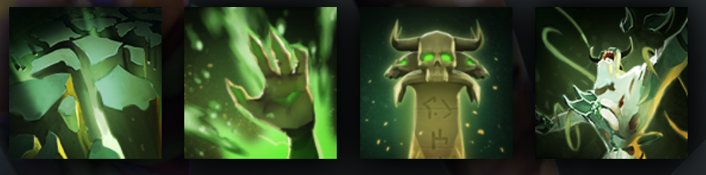

UNDYING
SUMMONS HORDES OF ZOMBIES TO ATTACK HIS FOES
HISTORY
How long has it been since he lost his name? The torn ruin of his mind no longer knows. Dimly he recalls armor and banners and grim-faced kin riding at his side. He remembers a battle: pain and fear as pale hands ripped him from his saddle. He remembers terror as they threw him into the yawning pit of the Dead God alongside his brothers, to hear the Dirge and be consumed into nothingness. In the darkness below, time left them. Thought left them. Sanity left them. Hunger, however, did not. They turned on each other with split fingernails and shattered teeth. Then it came: distant at first, a fragile note at the edge of perception, joined by another, then another, inescapable and unending. The chorus grew into a living wall of sound pulsing in his mind until no other thought survived. With the Dirge consuming him, he opened his arms to the Dead God and welcomed his obliteration. Yet destruction was not what he'd been chosen for. The Dead God demanded war. In the belly of the great nothing, he was granted a new purpose: to spread the Dirge across the land, to rally the sleepless dead against the living. He was to become the Undying, the herald of the Dead God, to rise and fall and rise again whenever his body failed him. To trudge on through death unending, that the Dirge might never end.
ABILITIES
PAIRD WELL WITH
LUNA
ANCIENT
VENOMANCER